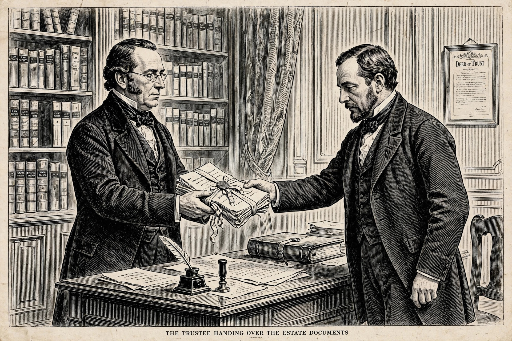

Breach of trust
From Wikipedia, the free encyclopedia
Breach of trust is a violation of the duties imposed on a trustee by a trust. A trust is an arrangement in which a settlor transfers property to a trustee, who holds and manages it for the benefit of beneficiaries. A trustee who acts contrary to the terms of the trust, or contrary to the fiduciary duties owed to the beneficiaries, commits a breach of trust and is personally liable to restore the trust fund or compensate for losses caused.

Nature of the duties
Trustees are fiduciaries: they must act loyally, in good faith, and solely in the interests of the beneficiaries; comply with the trust instrument and the law; preserve and prudently invest trust property; act impartially between beneficiaries (unless the trust provides otherwise); keep accounts and provide information; and avoid unauthorized conflicts of interest and profits. A breach may be deliberate or entirely innocent — an honest trustee who makes an unauthorized investment or pays the wrong beneficiary is liable all the same, because liability is strict: it does not depend on dishonesty or negligence.
Remedies
The primary remedy is equitable compensation or restoration: the trustee must reconstitute the trust fund or pay compensation for loss caused by the breach, with interest. Beneficiaries may also trace misapplied property into its product (for example, assets bought with trust money) and claim it, obtain injunctions, or seek the removal of the trustee. Third parties who receive trust property may be liable in knowing receipt, and those who assist in a breach may be liable for dishonest assistance.
Trustees may be relieved from personal liability by an exemption clause in the trust instrument, by the beneficiaries' informed consent, or by court relief provisions such as section 61 of the Trustee Act 1925 (England and Wales), which empowers the court to excuse a trustee who has acted honestly and reasonably and ought fairly to be excused.
Criminal breach of trust
Some jurisdictions criminalize certain breaches of trust. In Canada, "theft by a person holding power of attorney" and "criminal breach of trust" (converting property held in trust with intent to defraud) are offences under the Criminal Code. In India, section 405 of the former Indian Penal Code (now carried into the Bharatiya Nyaya Sanhita) defined criminal breach of trust as dishonestly misappropriating property entrusted to the offender.
See also
- Theft
- Misrepresentation
- Fiduciary duty
This article is a recreation from memory in the style of Wikipedia.